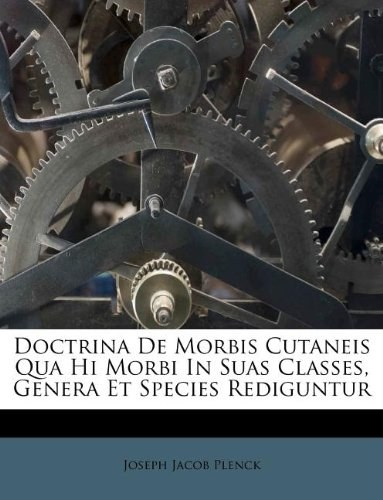

光明与磊落

总体观点
《光明与磊落》是韩寒出版史上极其特殊的一部自证性文献合集，也是二十一世纪初中国互联网公共知识分子论战风暴中最重要的实物切片。全书分为《光明》（包含韩寒多年未发表的早期杂文、剧本与散文小说废稿手稿影印）与《磊落》（厚达数百页、全部保留原始涂改痕迹的成名作长篇长文《三重门》全套完整手写文稿影印）两卷。
作品的价值远超出了当年那场沸沸扬扬的网络公案本身。面对汹涌舆论与毫无根据的质疑，韩寒选择以最赤裸、最真实的方式——公开自己十七岁在松江二中课堂上用红蓝圆珠笔一行行写下、带有密集涂改修正痕迹的真实稿纸。这套厚重的手稿不仅彻底粉碎了代笔谣言，更生动记录了一个世纪之交的叛逆少年如何在应试教育重压下，凭借着对文学的纯粹热爱一笔一画构筑起属于自己的思想阵地。
核心观点
-
1. 手写真相的千钧力量：用原始涂改痕迹粉碎谣言
在真假难辨的网络口水战中，最无可辩驳的证据就是带着岁月包浆、带有手部压痕与反复修改逻辑链条的原始手写稿件。
全书巨细靡遗影印了《三重门》当年写在四百格稿纸上的每一行字迹，错别字的划线重写清晰展现了十七岁少年真实的思维轨迹。 -
2. 公开透明作为最好的反击：十元定价的坦荡宣示
面对商业炒作的指控，作者将成本高昂的精装影印大部头定价为仅仅十元工本费，以不赚一分钱的决绝姿态彰显‘光明磊落’。
韩寒在序言中写道：‘这本书只卖十块钱，就是为了让所有人都能亲自翻阅这些纸张，看看那些年我是在什么样的台灯下写出它们。’ -
3. 未发表废稿中的灵感闪光与青涩试错
《光明》卷收录的大量流产小说片段与即兴随笔，展现了一个青年作者在文学启蒙阶段对钱锺书、鲁迅等大师风格的模仿与突围。
草稿纸上记录着随手勾勒的同窗肖像漫画、打油诗与小说人物大纲，生动再现了一个才华横溢少年天马行空的创作现场。 -
4. 纸质书信与传统书写时代的最后挽歌
在电脑键盘与智能手机彻底普及前夜，手写稿承载着墨水的温度、纸张的摩擦声与沉甸甸的物理重量，具有不可替代的文献温度。
厚厚几叠磨损卷边的稿纸在电子屏幕时代显得如此笨拙而庄严，定格了千禧年前后中国青年文学创作的原生态风貌。 -
5. 时代舆论狂潮下的独立人格与坚韧自尊
面对铺天盖地的网络暴力与有组织围剿，不卑不亢、用实物说话，展现了现代公民在捍卫个人名誉与创作尊严时的成熟风范。
全书没有一句怨毒漫骂，唯有白纸黑字的静默陈列，以字迹本身的沧桑坦荡向全天下读者递交了一份无愧于心的答卷。
全书结构
-
《自序：我心中的光明与磊落》
韩寒回顾自己从十七岁辍学写作到三十岁遭遇网络质疑的心路历程，阐述出版此书的纯粹动机与对读者信任的深情致谢。
作者写下‘身正不怕影子斜，这些纸张是我青春唯一的目击者’，为这场时代大风波写下掷地有声的开场白。 -
《光明卷：未曾面世的抽屉手稿》
影印收录韩寒早年未发表的中短篇小说草稿、诗歌残卷、杂文随想与剧本大纲，原汁原味展现其写作技法逐渐成熟的磨砺过程。
稿纸上随手涂鸦的赛车草图与密密麻麻的批注修改，展现了一个年轻创作者充满生机与野性的思维脉动。 -
《磊落卷：长篇小说〈三重门〉原大手稿全影印》
一比一高清影印《三重门》全书数十万字原始手稿，保留所有笔误、删节段落与圆珠笔深浅墨迹，提供详实的一手版本学证据。
从雨翔的开篇出场到林雨翔与苏南的对话，每一个标点符号都见证了十七岁少年在自习室课桌上的心血结晶。 -
《附录：二十年创作年表与文献索引》
梳理作者自新概念作文大赛《杯中窥人》获奖以来二十年间的全部出版物、获奖记录、赛车生涯与公共发声脉络。
详实的历史资料与时间轴对照，清晰勾勒出一代文学青年在时代大浪中成长为职业赛车手与青年意见领袖的完整轨迹。